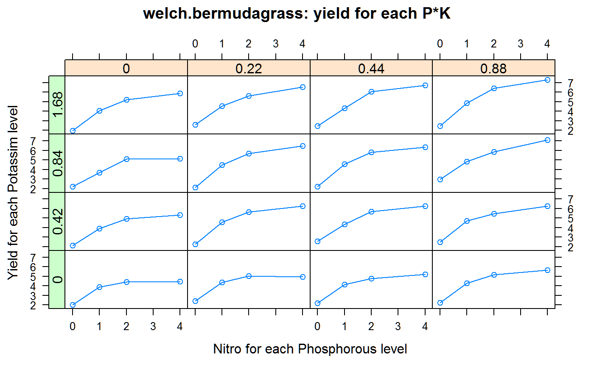
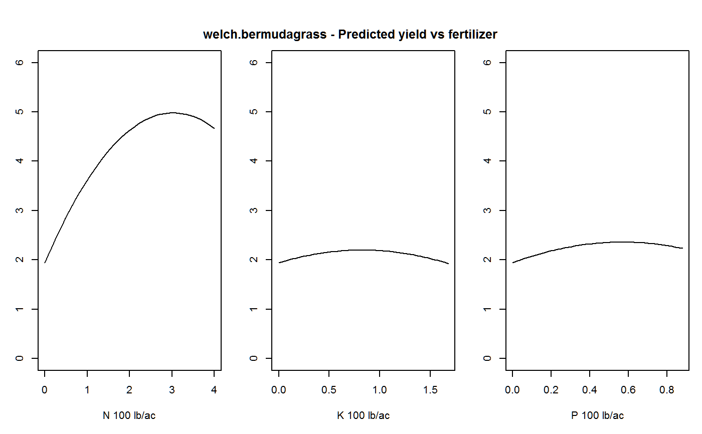

welch.bermudagrass.RdFactorial experiment of bermuda grass, N, P, K fertilizers
A data frame with 64 observations on the following 4 variables.
nnitrogen fertilizer, pounds/acre
pphosphorus, lb/ac
kpotassium, lb/ac
yieldyield of grass, tons/ac
The experiment was conducted 1955, 1956, and 1957. There were 3 blocks. The harvests were oven-dried. Each value is the mean for 3 years and 3 replications. In most cases, the yield increased with additions of the fertilizer nutrients.
Welch, Louis Frederick and Adams, William Eugenius and Carmon, JL. 1963. Yield response surfaces, isoquants, and economic fertilizer optima for Coastal Bermudagrass. Agronomy Journal, 55, 63-67. Table 1. https://doi.org/10.2134/agronj1963.00021962005500010023x
Jim Albert. Bayesian Computation with R. Page 256.
Peter Congdon. Bayesian Statistical Modeling. Page 124-125.
P. McCullagh, John A. Nelder. Generalized Linear Models, Second Edition. Page 382.
# \dontrun{ library(agridat) data(welch.bermudagrass) dat <- welch.bermudagrass # Welch uses 100-pound units of n,p,k. dat <- transform(dat, n=n/100, p=p/100, k=k/100) libs(latticeExtra) useOuterStrips(xyplot(yield~n|factor(p)*factor(k), data=dat, type='b', main="welch.bermudagrass: yield for each P*K", xlab="Nitro for each Phosphorous level", ylab="Yield for each Potassim level"))# Fit a quadratic model m1 <- lm(yield ~ n + p + k + I(n^2) + I(p^2) + I(k^2) + n:p + n:k + p:k + n:p:k, data=dat) signif(coef(m1),4) # These match the 3-yr coefficients of Welch, Table 2#> (Intercept) n p k I(n^2) I(p^2) #> 1.94300 2.00700 1.47100 0.61880 -0.33150 -1.29500 #> I(k^2) n:p n:k p:k n:p:k #> -0.37430 0.20780 0.18740 0.23480 0.02789## (Intercept) n p k I(n^2) I(p^2) ## 1.94300 2.00700 1.47100 0.61880 -0.33150 -1.29500 ## I(k^2) n:p n:k p:k n:p:k ## -0.37430 0.20780 0.18740 0.23480 0.02789 # Welch Fig 4. Modeled response curves d1 <- expand.grid(n=seq(0, 4, length=50), p=0, k=0) d1$pred <- predict(m1, d1) d2 <- expand.grid(n=0, p=0, k=seq(0, 1.68, length=50)) d2$pred <- predict(m1, d2) d3 <- expand.grid(n=0, p=seq(0, .88, length=50), k=0) d3$pred <- predict(m1, d3) op <- par(mfrow=c(1,3), mar=c(5,3,4,1)) plot(pred~n, data=d1, type='l', ylim=c(0,6), xlab="N 100 lb/ac", ylab="") plot(pred~k, data=d2, type='l', ylim=c(0,6), xlab="K 100 lb/ac", ylab="") title("welch.bermudagrass - Predicted yield vs fertilizer", outer=TRUE, line= -3) plot(pred~p, data=d3, type='l', ylim=c(0,6), xlab="P 100 lb/ac", ylab="")par(op) # Brute-force grid-search optimization of fertilizer quantities, using # $25/ton for grass, $.12/lb for N, $.18/lb for P, $.07/lb for K # Similar to Example 5 in Table 4 of Welch d4 <- expand.grid(n=seq(3,4,length=20), p=seq(.5, 1.5, length=20), k=seq(.8, 1.8, length=20)) d4$pred <- predict(m1, newdata=d4) d4 <- transform(d4, income = 25*pred - .12*n*100 + -.18*p*100 -.07*k*100) d4[which.max(d4$income),] # Optimum at 300 lb N, 71 lb P, 148 lb K#> n p k pred income #> 5281 3 0.7105263 1.484211 7.079801 117.8161# ----- JAGS ----- if(0){ # Congdon (2007) p. 124, provides a Bayesian model based on a GLM # by McCullagh & Nelder. We use JAGS and simplify the code. # y ~ gamma with shape = nu, scale = nu * eps_i # 1/eps = b0 + b1/(N+a1) + b2/(P+a2) + b3/(K+a3) # N,P,K are added fertilizer amounts, a1,a2,a3 are background # nutrient levels and b1,b2,b3 are growth parameters. libs(rjags) mod.bug = "model { for(i in 1:nobs) { yield[i] ~ dgamma(nu, mu[i]) mu[i] <- nu * eta[i] eta[i] <- b0 + b1 / (N[i]+a1) + b2 / (P[i]+a2) + b3 / (K[i]+a3) yhat[i] <- 1 / eta[i] } # Hyperparameters nu ~ dgamma(0.01, 0.01) a1 ~ dnorm(40, 0.01) # Informative priors a2 ~ dnorm(22, 0.01) a3 ~ dnorm(32, 0.01) b0 ~ dnorm(0, 0.0001) b1 ~ dnorm(0, 0.0001) I(0,) # Keep b1 non-negative b2 ~ dnorm(0, 0.0001) I(0,) b3 ~ dnorm(0, 0.0001) I(0,) }" jdat <- with(welch.bermudagrass, list(yield=yield, N=n, P=p, K=k, nobs=64)) jinit = list(a1=40, a2=22, a3=32, b0=.1, b1=10, b2=1, b3=1) oo <- textConnection(mod.bug) j1 <- jags.model(oo, data=jdat, inits=jinit, n.chains=3) close(oo) c1 <- coda.samples(j1, c("b0","b1","b2","b3", "a1","a2","a3"), n.iter=10000) # Results nearly identical go Congdon print(summary(c1)$statistics[,1:2],dig=1) # libs(lucid) # print(vc(c1),3) ## Mean SD ## a1 44.85 4.123 ## a2 23.63 7.37 ## a3 35.42 8.57 ## b0 0.092 0.0076 ## b1 13.23 1.34 ## b2 1.186 0.47 ## b3 1.50 0.48 d2 <- coda.samples(j1, "yhat", n.iter=10000) dat$yhat <- summary(d2)$statistics[,1] with(dat, plot(yield, yield-yhat)) } # }